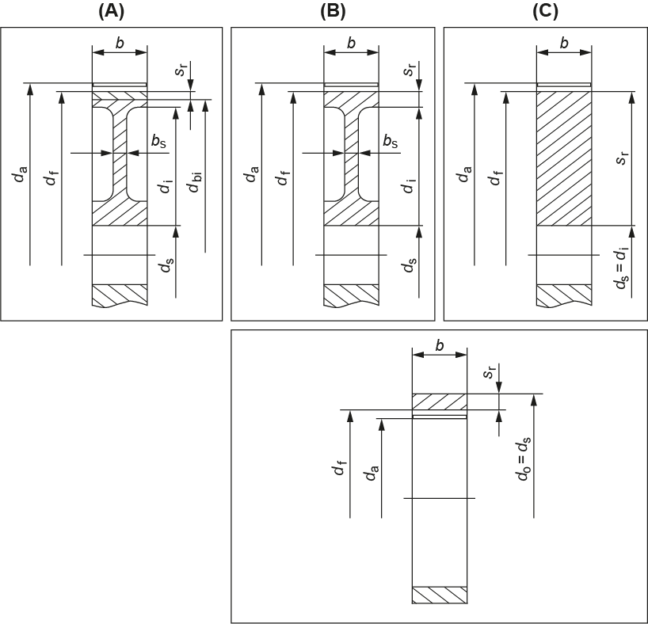

|
|
|


内径
计算质量转动惯量需要内径。按照 ISO 或 AGMA 的定义，齿圈厚度确实会影响强度。对于实心轮，输入 0。对于带腹板的外齿轮，输入直径 di。
按照 ISO 或 AGMA 计算时，需要齿轮内圈直径。当使用薄齿圈时，该系数会极大地影响计算结果，如图所示。

图 17.5：确定直径尺寸
Inside diameter
The internal diameter is needed to calculate the mass moment of inertia. As defined in ISO or AGMA, the gear rim thickness does affect the strength. Enter 0 for solid wheels. For external wheels with webs, enter the diameter di.
The internal gear rim diameter is required for calculations according to ISO or AGMA. Where thin gear rims are used, this factor can greatly influence the calculation results, as shown in the figure.
Figure 17.5: Dimensioning the diameter